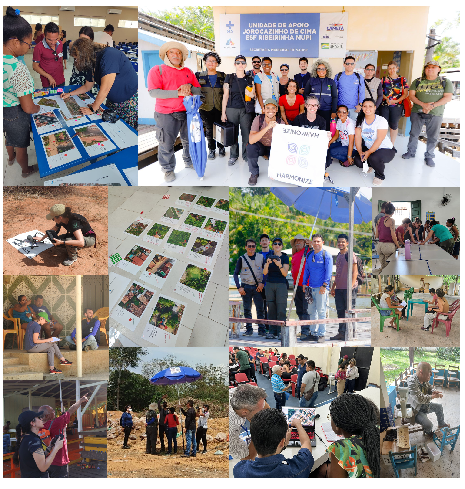

Field campaigns
The Brazilian team from Harmonize conducted six field campaigns across the two areas of interest to the HARMONIZE’s project in Brazil between 2022 and 2025. The 2022 campaign in the Lower Tocantins region had an exploratory character, focusing on identifying and mapping key local stakeholders in the region. During this campaign, initial drone flights were carried out in the municipalities of Abaetetuba, Cametá, Mocajuba, and Baião. In subsequent years, activities were concentrated in Cametá and Mocajuba. In the Semiarid region of Paraíba, field activities took place in 2024 and 2025 in the municipalities of Patos and Mãe d’Água.
The campaigns involved workshops with local stakeholders and communities, as well as the data collection through questionnaires, interviews, and drone flights. In addition, ground-based observational forms were used for landscape characterization of the surveyed areas. The selection of surveyed localities was guided by participatory processes involving local epidemiological surveillance teams and the population, which identified areas with recurrent occurrences of vector-borne diseases and landscape features relevant to local transmission dynamics.
The figure below illustrates the surveyed localities and highlights some activities carried out during the field campaigns.
{kind=link}

Figure 12 - Records of field activities carried out by the team in the Brazilian HARMONIZE hotspots.